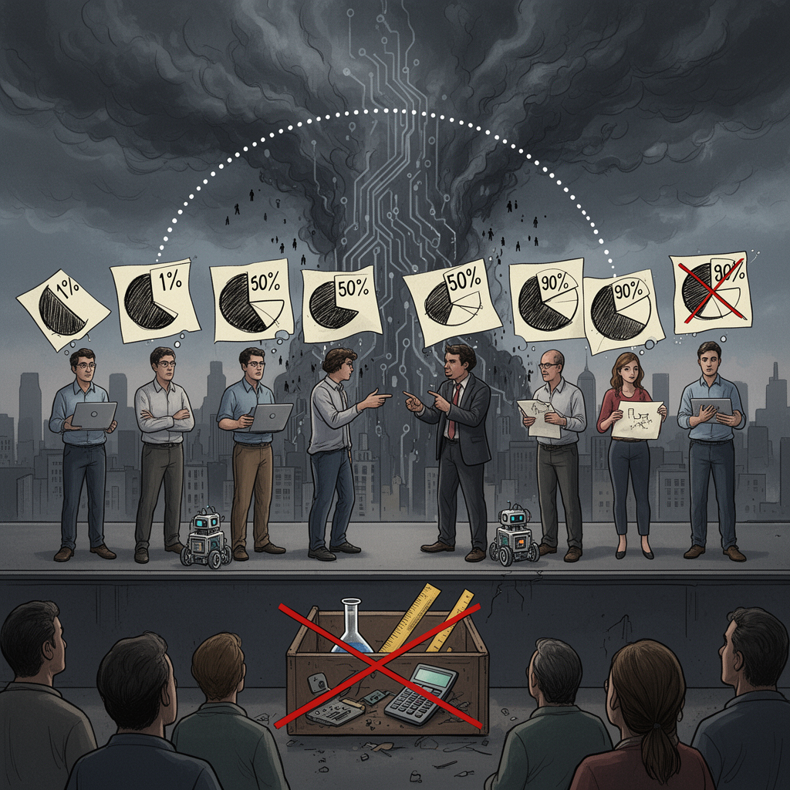

AI Panorama · fly through the GLM 5.3 edition
This page was written entirely by GLM 5.3 (Z.ai), as one of the magazine's editions - eight AI models each wrote their own version of every story from the same frozen sources.
An encyclopedia idea, explained by this edition wherever the stories leaned on it.

p(doom) — the 'p' stands for probability — is the informal shorthand people in AI circles use for their personal estimate of the odds that artificial intelligence causes an extremely bad outcome, up to and including human extinction. Someone who says their p(doom) is 5 percent means: in my honest judgment, there is roughly a one-in-twenty chance this goes as badly as it possibly could. It is not a scientific measurement. There is no data set or experiment behind it; it is a considered gut number from people whose job is to think about the risk, and well-informed people give very different answers. That spread is itself informative: when experts disagree that widely about whether their field's product could be fatal, the question is genuinely unsettled. The number is useful because it turns vague anxiety into a concrete claim that can be argued with, and compared over time. Treat any single p(doom) as one person's opinion, not a fact about the world — and treat the fact that serious people keep volunteering such numbers in public as a signal worth taking seriously.